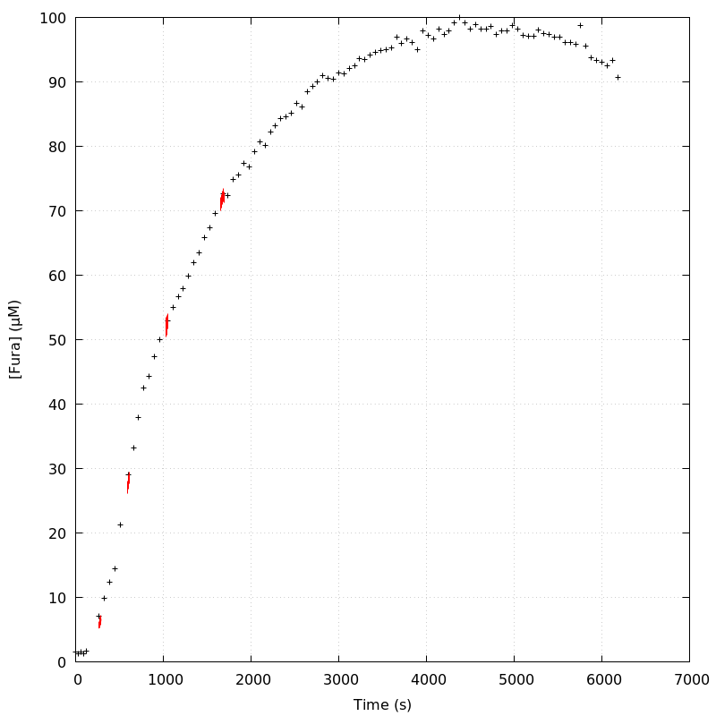
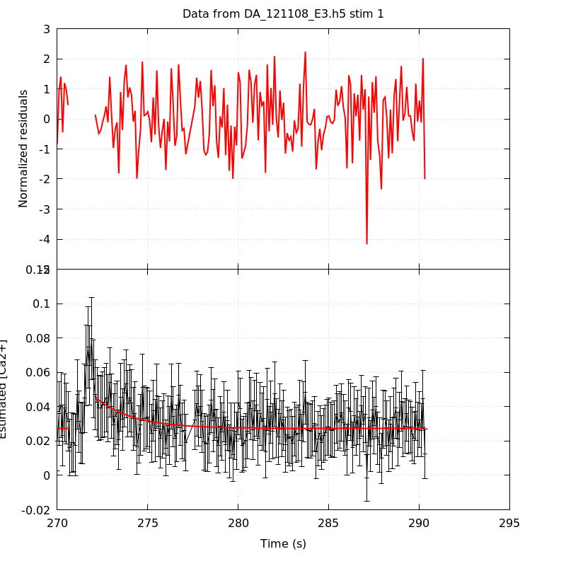
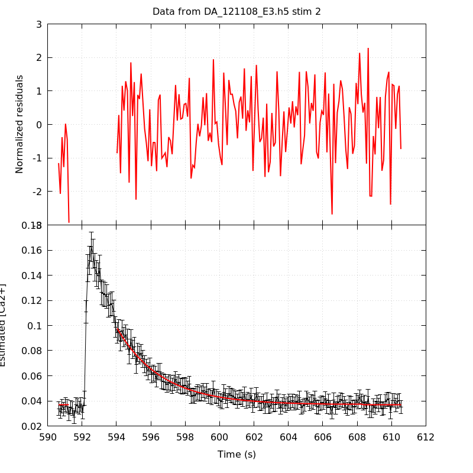
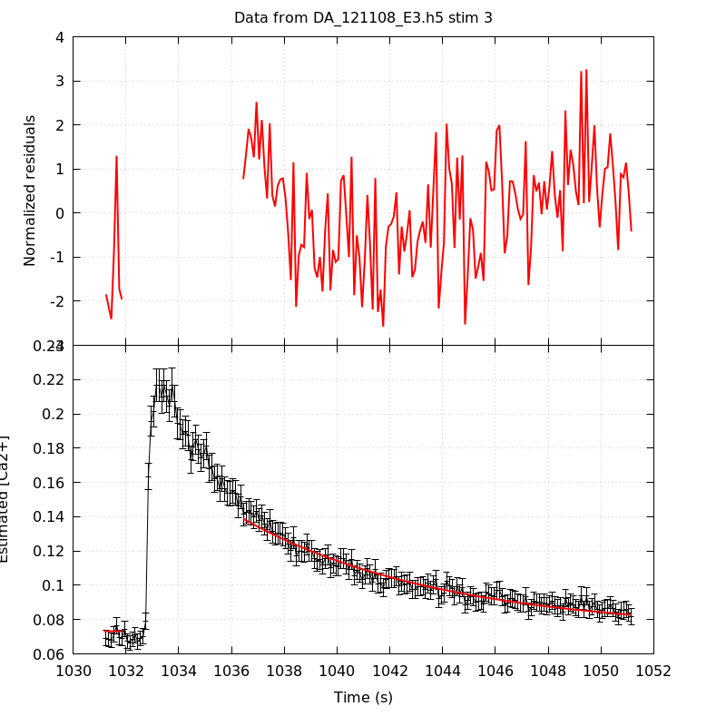

The baseline length is: 7.
When fitting tau against kappa_Fura only the transients for which the fit RSS and the lag 1 auto-correlation of the residuals were small enough, giving an overall probability of false negative of 0.02, were kept (see the numerical summary associated with each transient).
The good transients are: 1, 2.
Not enough good transients to keep going!
The time at which the 'good' transients were recorded appear in red.

On each graph, the residuals appear on top. Under the null hypothesis, if the monoexponential fit is correct they should be centered on 0 and have a SD close to 1 (not exactly 1 since parameters were obtained through the fitting procedure form the data.
The estimated [Ca2+] appears on the second row. The estimate is show in black together with pointwise 95% confidence intervals. The fitted curve appears in red. The whole transient is not fitted, only a portion of it is: a portion of the baseline made of 7 points and the decay phase starting at the time where the Delta[Ca2+] has reached 50% of its peak value.
The time appearing on the abscissa is the time from the beginning of the experiment.
Transient 1 is 'good'.

nobs = 186
number of degrees of freedom = 183
baseline length = 7
fit started from point 21
estimated baseline 0.0273222 and standard error 0.000805364
estimated delta 0.0181871 and standard error 0.00416596
estimated tau 2.03877 and standard error 0.745111
residual sum of squares: 191.363
RSS per degree of freedom: 1.0457
Probability of observing a larger of equal RSS per DOF under the null hypothesis: 0.320831
Lag 1 residuals auto-correlation: -0.041
Pr[Lag 1 auto-corr. > -0.041] = 0.695
Transient 2 is 'good'.

nobs = 173
number of degrees of freedom = 170
baseline length = 7
fit started from point 34
estimated baseline 0.0369405 and standard error 0.000330969
estimated delta 0.060833 and standard error 0.00144917
estimated tau 2.59043 and standard error 0.0976462
residual sum of squares: 186.849
RSS per degree of freedom: 1.09911
Probability of observing a larger of equal RSS per DOF under the null hypothesis: 0.178507
Lag 1 residuals auto-correlation: 0.027
Pr[Lag 1 auto-corr. > 0.027] = 0.340
Transient 3 is a 'bad'.

nobs = 155
number of degrees of freedom = 152
baseline length = 7
fit started from point 52
estimated baseline 0.0733931 and standard error 0.000767053
estimated delta 0.0653986 and standard error 0.000922069
estimated tau 7.57061 and standard error 0.243137
residual sum of squares: 230.397
RSS per degree of freedom: 1.51577
Probability of observing a larger of equal RSS per DOF under the null hypothesis: 4.20253e-05
WARNING: THE FIT IS NOT GOOD!
Lag 1 residuals auto-correlation: 0.514
Pr[Lag 1 auto-corr. > 0.514] = 0.000
Transient 4 is a 'bad'.
nobs = 170
number of degrees of freedom = 167
baseline length = 7
fit started from point 37
estimated baseline 0.0888365 and standard error 0.000517875
estimated delta 0.0504728 and standard error 0.000728252
estimated tau 10.9868 and standard error 0.400463
residual sum of squares: 216.145
RSS per degree of freedom: 1.29428
Probability of observing a larger of equal RSS per DOF under the null hypothesis: 0.0062332
WARNING: THE FIT IS NOT GOOD!
Lag 1 residuals auto-correlation: 0.271
Pr[Lag 1 auto-corr. > 0.271] = 0.003
2 out of 4 transients were kept.
sigma(tau): 0.745111, 0.0976462
Residual correlation at lag 1: -0.04084392384801662, 0.027032740705266275
Probablity of a correlation at lag 1 smaller or equal than observed: 0.6950000000000001, 0.33999999999999997
RSS/DOF: 1.0457, 1.09911